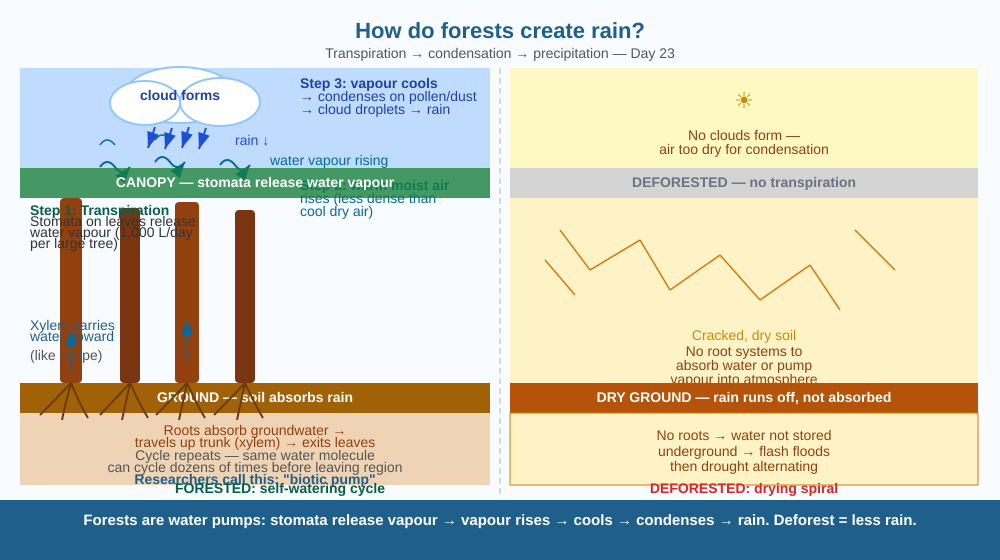

Discover why forests are not just passive bystanders in rain — they actively pump water into the sky, creating the clouds that water the land.
The Amazon rainforest receives rain almost every afternoon. The Western Ghats in India get heavy monsoon rains, largely because of the dense forests on their slopes. Yet when these forests are cleared, rainfall in the region drops within years. How can cutting down trees cause a drought?
Forests generate rain through a process called the transpiration–precipitation cycle:
Step 1 — Transpiration. Trees constantly absorb groundwater through their roots. This water travels up the trunk and branches and exits through millions of tiny pores called stomata on the undersides of leaves, evaporating into the air as water vapour. A single large tropical tree can release 1,000 litres of water vapour per day. A forest of millions of trees pumps enormous amounts of water into the atmosphere.
Step 2 — Rising air. Warm, moist air is less dense than cool dry air. The water vapour released by the forest heats up in sunlight and rises.
Step 3 — Cooling and condensation. As the moist air rises to higher altitudes, the temperature drops. Water vapour condenses around condensation nuclei — tiny particles like dust and pollen released by the forest itself. Droplets clump together into cloud droplets and eventually into raindrops.
Step 4 — Precipitation. Rain falls, watering the forest. The forest absorbs it, and the cycle repeats. Researchers call this the biotic pump — forests actively pump moisture from the ground to the sky.
Think of a forest as a giant fountain. The pump (roots) pulls water from underground, the pipes (xylem inside tree trunks) carry it upward, and the nozzles (stomata on leaves) spray it as invisible vapour into the air. The water then condenses into visible clouds and falls back as rain — refilling the underground reservoir. If you smash the fountain (clear the forest), the pump stops, the air dries out, and rain stops forming.

The diagram shows a cross-section from underground to sky. Roots absorb groundwater, xylem vessels carry water upward, stomata on leaves release water vapour. Rising arrows show moist air moving upward. At the top, cloud symbols form as condensation occurs. Rain arrows fall back to the forest floor. A comparison panel on the right shows bare land — dry air, no cloud formation, cracked soil.
Take two plastic bags. Fill one with freshly picked leaves (or a small potted plant), the other with the same weight of gravel or soil. Seal both tightly and leave in sunlight for 30 minutes. Open each bag in turn — hold it over a dry piece of paper. Which produces more moisture? The leaves should drip with condensed water vapour that transpired from the plant. This is the basic process behind an entire forest's water pump.
The Amazon forest mostly recycles its own rainfall — the same water molecule can cycle from ground to cloud and back many times before eventually leaving the region. Scientists call this "green water." Compare this to a concrete city where rain hits impermeable surfaces and flows immediately to drains and rivers (no recycling). What happens to local humidity and cloud formation in a city when green spaces are replaced by buildings? Does this help explain why Indian cities like Bengaluru and Hyderabad have experienced flooding and drought in the same year?
What is the main mechanism by which forests contribute to rainfall?
Why is understanding the transpiration-precipitation cycle more useful than knowing forests produce rain?
If a large forest were completely cut down, what would you predict would happen to the local rainfall over time?
A government plans to build a dam in a forested river valley. The dam will flood 10,000 hectares of forest. Using the biotic pump model, predict three downstream consequences for rainfall, river flow, and soil quality in the surrounding region over 20 years. Then suggest two design changes that might reduce these impacts while still allowing the dam to be built.
The forest doesn't just release water — it releases biogenic aerosols: invisible organic molecules from leaves, bark, and fungi. These molecules are far better condensation nuclei than dust. Scientists have found that some of these molecules (terpenes released by pine trees) can trigger cloud formation even in relatively dry air. A pine forest is essentially manufacturing its own rain-triggering particles. Deforestation doesn't just remove the water pump — it removes the rain-making chemistry too.
Forests are water pumps: roots absorb groundwater → stomata release vapour → vapour rises → cools → condenses (on pollen/dust) → forms clouds → rain falls back. Remove the forest = break the pump = less rain.